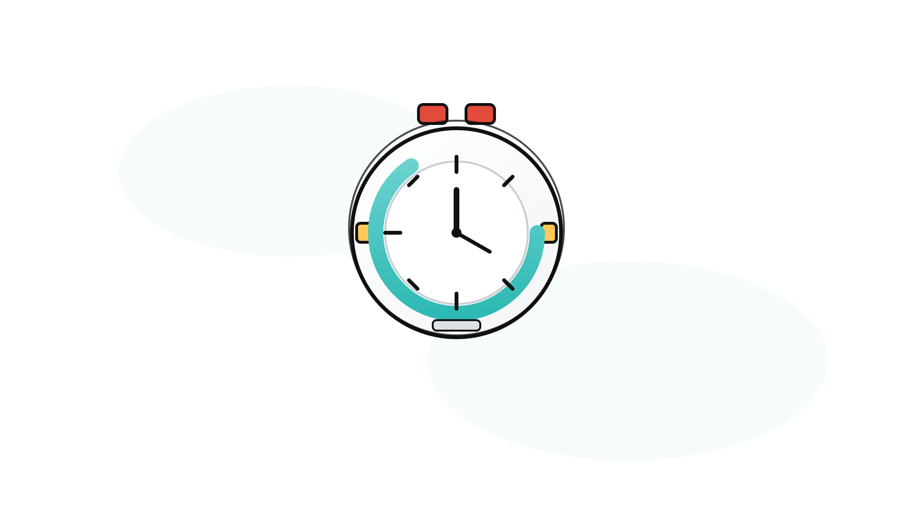
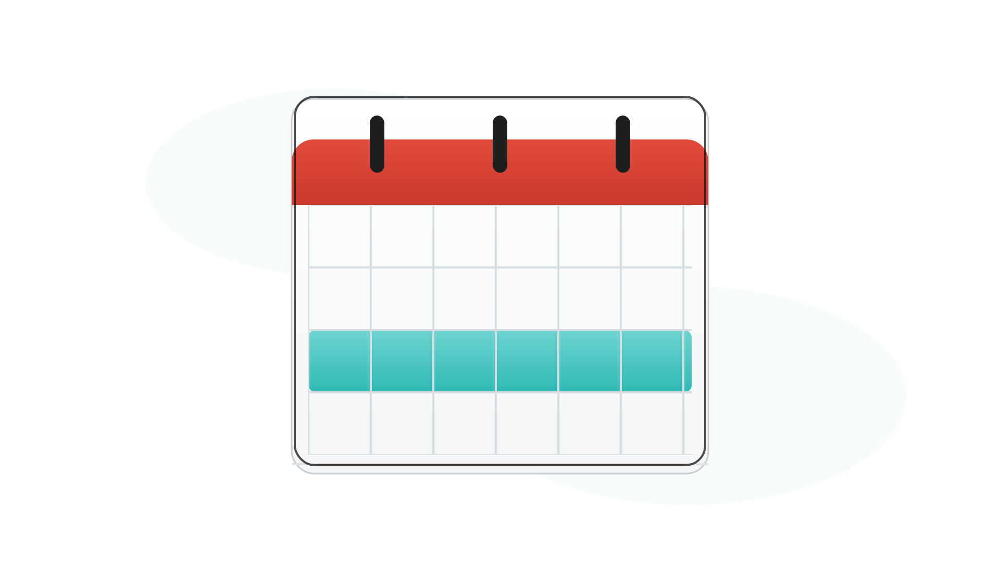
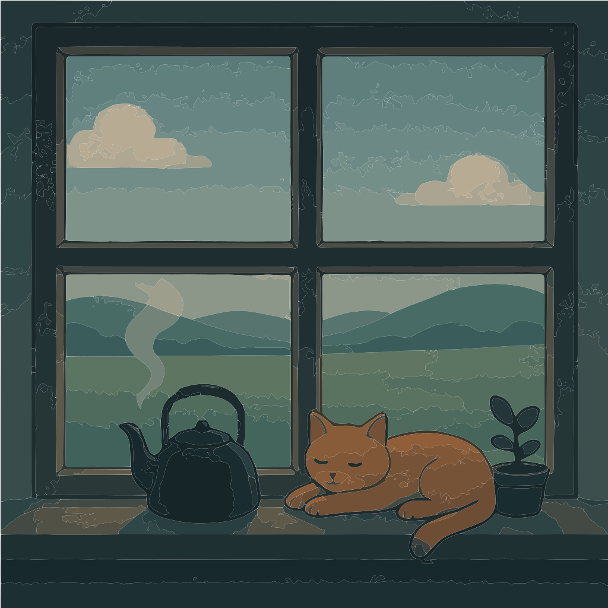

StudyFlow requires JavaScript to run.
‹
›

00:00

S
t
u
d
y
F
l
o
w
⏳
session
2
of
4
05
:
00

session
1
of
4
25
:
00
START
RESET
Set Reminder
Set Reminder
×
Reminder Name:
Date:
Today
Select Date
Time:
Select Date:
Cancel
Set Reminder
🌻